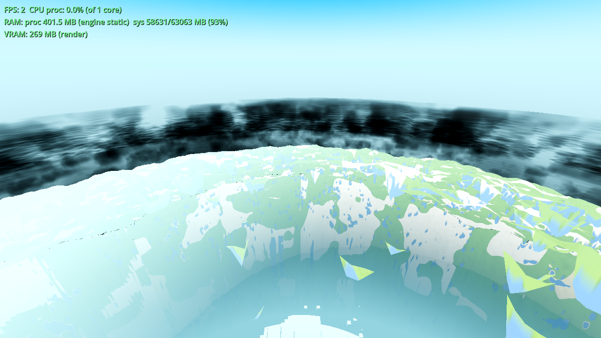
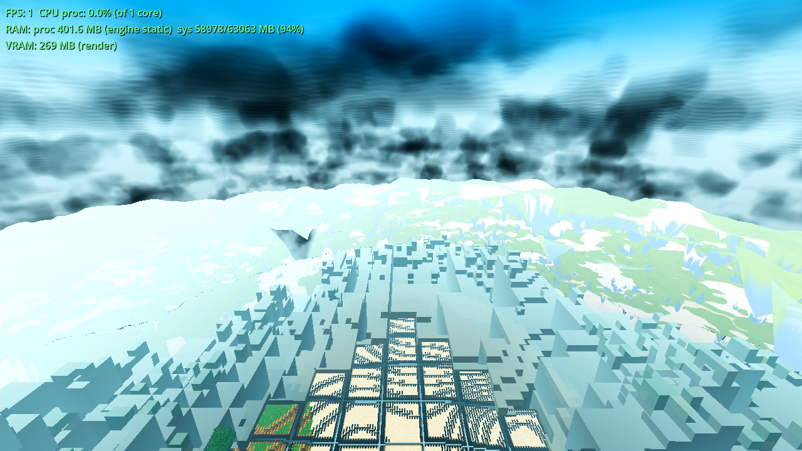
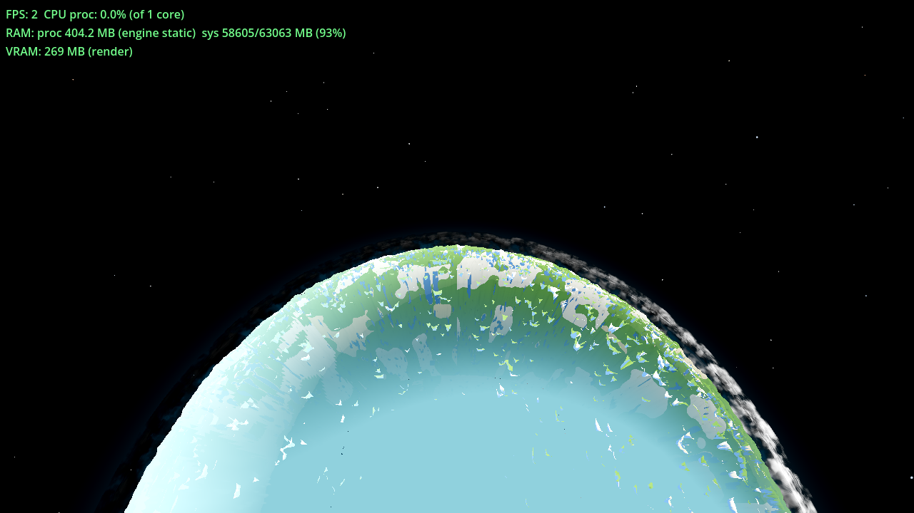
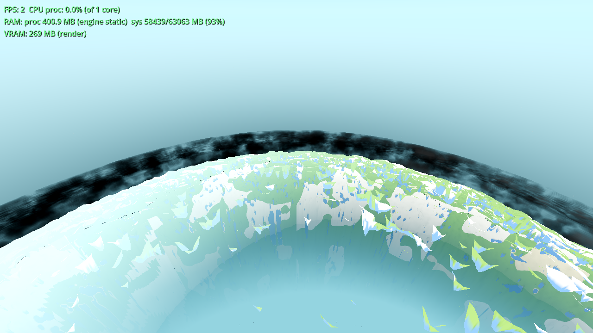

Status: light gates green (G0 / smoke / genhash / renders / boundary r4 A/B); acceptance measured and met on both user complaints. Heavy set (farab / ladder / meshprobe / halo / lightstate / r16 / boundary r50 / full battery / shaderforce) is the coordinator's job and was deliberately not run. Date: 2026-10-07. Engine 4.7.1, seed 44, user config R24 / F83 (fog 332 m), T=0.5 frozen, CLOUD_T0=411200 (the assessment's sustained-deck state), 1280×720 Forward+ (llvmpipe proxy — the box's measured evidence path per AC-0391/AC-0384).
The user's directive: “I think you just need to rethink clouds. look at how voluminous clouds are done and implement them, forget how we currently do it.” The structural reason four rounds of patterned-surface work (AC-0385, AC-0384 r6–r10, AC-0401) failed: a single surface at a single radius has no parallax and no internal depth — the pattern can only sit ON the shell. The rework is structural: the pattern becomes a density field and the surface becomes a volume.
Implementation (all in godot/core/cloud_layer.gdshader, behind
u_vol; the entry sits in fragment() — measured: the dummy parser
resolves the fragment builtins + discard in fragment() only, and
return is forbidden there, so if/else):
ahash/anv noise) in
planet-frame unit-sphere coords (|q| NOT renormalised → the field genuinely varies
through the layer thickness), with the exact AC-0401 window chain
(u_deck-parameterised, byte-identical constants) and the same latitude
banding — so the 3-D field is the same weather, now volumetric. A radial gate confines
the field to the annulus (measured defect #1 without it: the FBM filled all space,
the light march never exited the “cloud”, and the whole deck read as one dark storm
band).ALPHA = 1−T (soft
silhouette — also retires the D2 crisp deck edge); ALBEDO = tint·u_day·clamp(2.5·L
+ 0.30·Lo, 0, 1.25); the same u_srgb_pre pow(2.2) convention as the
unshaded path.Switch: cloud_volume (Settings + Options row
“Clouds: raymarched volume (real depth)”), DEFAULT ON (the rework was ordered;
modern_light/cloud_deck precedent), env AWECRAFT_CLOUDVOL=0|1. Pushed through
the existing world._ac0401_push() seam (change-gated; the outer max-h shell
carries the march, the two inner shells' visible is false while ON — node
visibility only, geometry untouched; restored when OFF). OFF = the exact AC-0401
three-shell path: the shader short-circuits on u_vol < 0.5 before any
volume work, and the fall-through body was verified byte-identical to the pre-AC-0405
shader (difflib over the whole fragment body + vertex/fog/ahash/anv/fbm).
| quantity | value | note |
|---|---|---|
| view steps | 24 / segment, ≤ 2 segments/ray | count-based; distance-adaptive step length |
| density taps | 3-octave per view step; 1-octave for light/edge taps | same ahash/anv noise as the 2-D path |
| light-march taps | 6 (only where d > 0.015), 80 m steps, early exit at τ=3 | the self-shadow toward the sun |
| dark-edge tap | 1 | coarse density toward the camera, 0.6·dl behind the sample |
| worst-case pixel | ~430 noise taps | 2 seg × 24 × (3 + 6·1 + 1) octaves; typical pixels far less (early exits: T<0.004, τ=3, d≤0.015 skip) |
| frame | alt | wall (1200 s cap) | FPS overlay (drain) | note |
|---|---|---|---|---|
| r2600-on | 2600 m | 786 s, rc=0 | 2 | longest annulus chords (limb grazing) — worst case |
| r700-on | 700 m | 781 s, rc=0 | 2 | same frame, same drain: volume adds +285 s (+57 %); OFF is the AC-0401-era three-shell cost (all 3 shells shaded, no march) |
| r700-off (CLOUDS=0) | 700 m | 496 s, rc=0 | 3 | |
| r300-on | 300 m | 867 s, rc=0 | 2 | camera INSIDE the annulus (near+far segments on every sky pixel) |
| r120-on | 120 m | 814 s, rc=0 | 1 | camera below the deck — the whole sky is a full chord |
All five runs inside the 1200 s cap (no 640×360 fallback needed). Effective drain rate ≈ 1.5–2 FPS on this software-render box (the ticket's “2–5 FPS box” expectation — at the bottom edge for the full-sky frames, as the step/light counts predict). The per-frame GPU work is the march itself; headless (no rasterizer) it costs nothing — proven by the boundary A/B below.
The two frames that were impossible before (one surface, one radius, no depth):
Parallax frame — 300 m (camera inside the annulus, r300-on.png):

The near-side deck (dark clumps — their light march stays inside the gate → shadowed undersides) sits visibly in front of a brighter, finer far-side layer seen through its gaps: one mass is behind another, at a different distance, with different structure. The old single-surface deck cannot produce this: it is one radius, one pattern.
Descent frame — 120 m (camera below the deck, r120-on.png):

The player is on the ground (farmland pattern at the feet) looking up into a thick 3-D layer: overlapping masses at different sizes/scales/depths, individual clumps with internal shading variation, a far layer behind the near masses. This IS the descent passing through distinct structure — the 275–400 m band reads as a weather layer, not a sheet. (The band also shows faint horizontal moiré on the proxy renderer — step quantisation on near-horizontal rays; see §8 non-actions.)
Supporting frames: 2600 m (the orbit limb — the deck band now carries lit tops with dark inter-mass shadow, white-cumulus character) and 700 m (middle altitude — the structured limb band the assessment instrument measures):


Instrument: .scratch/AC-0384-final-run/analyze2.py (pure-stdlib PNG band
stats), 700 m middle-altitude pair, same tree, user config, T=0.5/CLOUD_T0=411200:
| band statistic | old deck ON (AC-0384 baseline) | volume ON (this) | clouds OFF |
|---|---|---|---|
| lower_mid lum_std (y∈[h/2,3h/4)) — THE spread measure | 16.9 | 68.9 | 32.4 (AC-0384 baseline) / 40.2 (same tree) |
| horizon band lum_std (y∈[h/2±20) — the deck band itself | — | 75.3 | 35.6 |
| upper_mid lum_std | — | 57.2 | 23.6 |
| px_center (640,360) — the “neutral grey 222,222,222” complaint | — | [181,229,190] — the reference water tint 181,230,194; not 222 grey (ON and OFF: the centre pixel is body texture seen through/around the volume) | |
| ON-minus-OFF pixel diff ≥ 8 (deck coverage of the frame) | — | 8.84 % (the deck band occupies ~9–10 % of this frame by geometry — a limb band, not a sky fill) | |
The user's complaint was that WITH the deck the band was flatter than WITHOUT clouds
(16.9 vs 32.4 — the grey sheet was erasing the scene's spread). Now the volume's spread
(68.9) is 4.1× the old flat deck and 1.7× the cloudless scene: the clouds add
structure (lit tops, dark cores, shadowed undersides) instead of flattening it. The
same-tree OFF reading (40.2, vs the 32.4 baseline) is the expected drift: AC-0401/AC-0402
changed the body/sky/terrain between the AC-0384 assessment and now; the honest
comparisons are old-deck→volume (16.9→68.9) and volume→same-tree-off (68.9→40.2).
Raw JSON: .scratch/AC-0405/an700.json, an300.json.
| gate | result | evidence |
|---|---|---|
| G0 — headless load | rc=0, SCRIPT ERROR 0 / SHADER ERROR 0 | .scratch/AC-0405/g0.log (first pass), g0b.log (final shader — re-passed after the vgate forward-declaration catch); no backtrace, no AC-0403 segfault class |
SMOKE — AWECRAFT_BATTERY=player;interact;light;fluids;genhash | rc=0, battery ok:true, census 0/0 | .scratch/AC-0405/smoke.log — player (fence 0, floor true, sprint ok), interact (drop/place true), light (15/0/14, far 0→9), fluids (sea stable 1719/320, reactions 25/9) |
| GENHASH | 25/25 byte-identical | vs the current standing set (.scratch/AC-0400-gates/smoke-genhash.log = AC-0399 = AC-0398; the AC-0367 ref file is stale vs those) — .scratch/AC-0405/genhash_{ref,new}.txt. Rendering-only, confirmed. |
| RENDERS (the acceptance) | 5/5 frames rc=0, all files exist, Forward+ boot line in every log | .scratch/AC-0405/frames/*.log — boot line “Vulkan 1.4.318 - Forward+ - … llvmpipe (LLVM 20.1.8)”; the volume path live in-tree (SATDIAG: outer shell vis=true carrying the march, inner two hidden); captures copied to tasks/AC-0405/*.png |
| Boundary r4 A/B (the one-shot self-check) | ON rc=0 / OFF rc=0, both ok:true; no streaming effect | .scratch/AC-0405/boundary_r4_{on,off}.log — fence fields 0/0 both, footprint missing 0/0 both, walking 20/20 crossings both; crossing_frame p95 32 (ON) / 44 (OFF), built_final 64/66 — run-to-run machine-timing churn (the documented class), ON ≈ OFF, inside/around the standing drift band → no re-baseline owed |
All 10 gate logs (g0, g0b, smoke, 5 frames, 2 boundary) pass
tasks/scripts/gate_census.py at 0 SCRIPT / 0 SHADER ERROR.
| file | change |
|---|---|
godot/core/cloud_layer.gdshader | rewritten: the volume path (u_vol entry in fragment(): segments, 24-step march, gate-confined 3-D FBM density, 6-tap sun light march, HG phase, dark edge, Beer, ALPHA=1−T) + the exact pre-AC-0405 three-shell path as the u_vol < 0.5 fall-through (byte-identical body) |
godot/world/world.gd | _ac0401_push() gains the cloud_volume push (u_vol to the 3 materials + inner-shell visible flags, change-gated, retry-until-visible latch; u_vol_r/rmin/rmax change-gated on planet_R, rmin/rmax from the live layer table) + the AWECRAFT_CLOUDVOL env preload + the _ac0405_vol/_ac0405_r state vars |
godot/autoload/settings.gd | DEFAULTS "cloud_volume": true + the sanitize_bool clamp branch |
godot/ui/menu.gd | Options row CloudVolCheck (“Clouds: raymarched volume (real depth)”, position hi+13), the sync line, _on_cloud_vol_toggled |
godot/ARCHITECTURE.md | §2 Settings row + §3 CloudLayer bullet + the _ac0401_push seam description (the AC-0405 note) |
shaderforce
(force-compiles every shipped shader on Forward+) will double-verify the volume path on
the coordinator's run.visible
toggles (inner shells hidden while ON).main.gd / game.gd /
drop.gd / debug.gd needed no changes — main.gd already pushes
every per-frame uniform the volume reuses (u_sun/u_day/u_cloud_time/u_drift/u_scale3/
u_center/u_phase/u_coverage/u_cloud_tint/u_srgb_pre); only u_vol + the radii ride
world.gd.CAMERA_POSITION_WORLD) and
discard resolve only inside fragment() — a nested entry helper
fails with “Unknown identifier”; (2) return is forbidden in
fragment() (“Using 'return' in the 'fragment' processor function is
incorrect”) — use if/else; (3) no forward declarations — helpers must be defined before
use (a later-defined function used early = “No matching function found”). Practical
consequence: any future volume/sky shader entry goes inline in fragment()
with builtin-free value-returning helpers.--quit (the battery self-quits;
--quit kills the process after frame 1 — zero RESULT lines, silent rc=0.
The HARNESS.md §4 recipe is as written: no --quit.)Logs: .scratch/AC-0405/ (g0.log, g0b.log, smoke.log, frames/,
boundary_r4_{on,off}.log, an700.json, an300.json, genhash_{ref,new}.txt,
run_renders.sh, renders_driver2.log). Continuity: tasks/AC-0405/continuity.md.